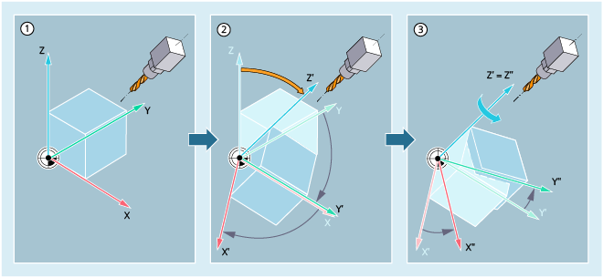

TOFRAME erzeugt ein rechtwinkliges Koordinatensystem, dessen Z-Achse parallel zur aktuellen Werkzeugausrichtung ist. Dies kann z. B. angewendet werden, um das Werkzeug in Z-Richtung kollisionsfrei freizufahren (z. B. nach einem Werkzeugbruch bei einem 5-Achs-Programm).
Ein vorhandener programmierter Frame wird mit TOFRAME durch einen Frame überschrieben, der eine reine Drehung beschreibt. Im vorher aktiven Frame eventuell vorhandene Nullpunktverschiebungen, Spiegelungen oder Skalierungen werden gelöscht. Die Lage der beiden Achsen X und Y ist dabei abhängig von der Einstellung im Maschinendatum MD21110 $MC_X_AXES_IN_OLD_X_Z_PLANE (Koordinatensystem bei automatischer Frame-Definition). Das neue Koordinatensystem wird entweder so belassen, wie es sich aus der Kinematik der Maschine ergibt, oder es wird zusätzlich so um die neue Z-Achse gedreht, dass die neue X-Achse in der alten Z-X-Ebene liegt:
① | WKS vor der Ausrichtung mit TOFRAME. |
② | TOFRAME dreht das WKS so, dass die Z-Achse in Werkzeugrichtung zeigt. |
③ | Nur bei MD21110 = 1: Das neue Koordinatensystem wird zusätzlich so um die neue Z-Achse (Z') gedreht, dass die neue X-Achse (X'') in der alten Z-X-Ebene liegt. |
TOROT richtet wie TOFRAME das WKS durch eine Frame-Drehung in Werkzeugrichtung aus, überschreibt dabei im programmierten Frame aber nur den Rotationsanteil. Alle übrigen Komponenten (Nullpunktverschiebungen, Spiegelungen und/oder Skalierungen) bleiben unverändert. Dadurch ist es z. B. möglich, eine Nullpunktverschiebung beizubehalten, mit der der Bezugspunkt im Werkstück definiert wurde.
| Hinweis |
TOROTMit dem Befehl TOROT wird eine konsistente Programmierung bei aktiven orientierbaren Werkzeugträgern für jeden Kinematiktyp erreicht. |
TOFRAME und TOROT sind auf Fräsbearbeitungen zugeschnitten, bei denen typischerweise G17 (Arbeitsebene X/Y) aktiv ist. Bei Drehbearbeitungen oder allgemein bei aktiven G18 oder G19 werden dagegen Frames benötigt, bei denen die X- oder Y-Achse mit der Ausrichtung des Werkzeugs übereinstimmt. Diese Frames werden mit den Befehlen TOFRAMEX/TOROTX bzw. TOFRAMEY/TOROTY programmiert. Die Zuordnungen der Achsrichtungen sind dann wie folgt:
Befehl | Werkzeugrichtung (Applikate) | Nebenachse | Nebenachse |
|---|---|---|---|
TOFRAME / TOFRAMEZ / | Z | X | Y |
TOFRAMEY / TOROTY | Y | Z | X |
TOFRAMEX / TOROTX | X | Y | Z |
Der aus TOFRAME oder TOROT resultierende Frame, der die Orientierung beschreibt, wird defaultmäßig in die Systemvariable für den programmierbaren Frame ($P_PFRAME) geschrieben.
Daneben besteht die Möglichkeit, die entstehenden Frames in einen eigenen Systemframe $P_TOOLFRAME zu schreiben. Dazu muss das Bit 3 im Maschinendatum MD28082 $MC_MM_SYSTEM_FRAME_MASK gesetzt sein. Der programmierbare Frame bleibt dann unverändert erhalten. Unterschiede ergeben sich, wenn der programmierbare Frame weiter bearbeitet wird.
Mit PAROT wird das Werkstückkoordinatensystem am Werkstück ausgerichtet. Im vorher aktiven Frame eventuell vorhandene Nullpunktverschiebungen, Spiegelungen oder Skalierungen bleiben erhalten.
| Hinweis |
Analog zur Situation bei drehbarem Werkzeugträger kann mit PAROT eine Drehung des Werkzeugtisches aktiviert werden. Damit wird ein Frame definiert, welches die Lage des Werkstückkoordinatensystems so verändert, dass es zu keiner Ausgleichsbewegung der Maschine kommt. Der Befehl PAROT wird nicht abgelehnt, wenn kein orientierbarer Werkzeugträger aktiv ist. |